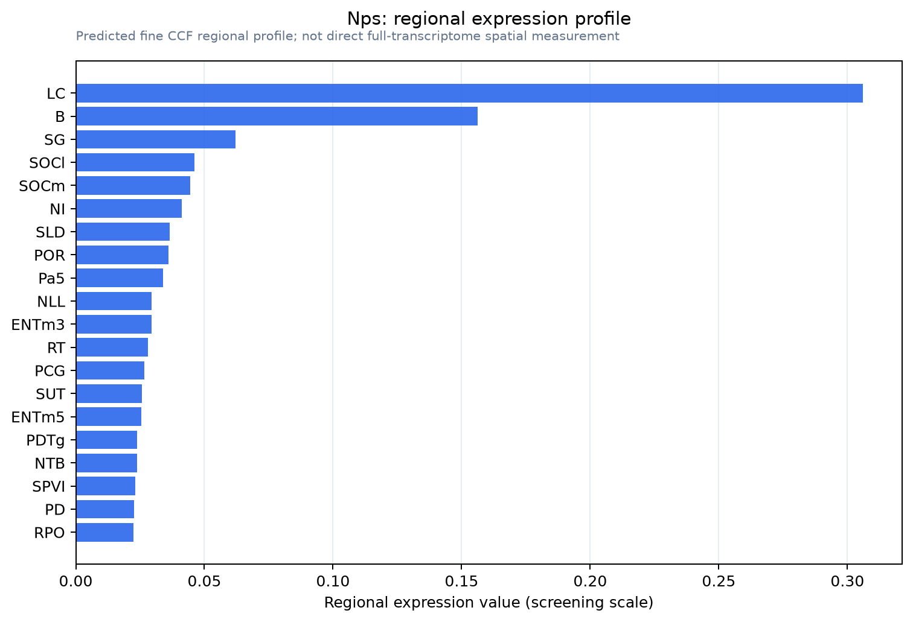

Nps
Spatial tier: STRICT_EXCLUSIVE · Class: OTHER · Top region: LC (Locus ceruleus) · Positive regions: 2/554
50.8Discovery Score
43.6Targetability Score
CEvidence grade C
What this means: Nps: predicted fine-region profile is strict-exclusive, with 2 positive regions out of 554 (limit 12); direct spatial validation is required.
Function in LC: evidence, prediction, innovation
- Gene function
- Nps encodes the precursor of neuropeptide S, a 20-amino-acid peptide named for its N-terminal serine and conserved across tetrapods. It acts on a single Gs/Gq-coupled receptor, NPSR1, raising cAMP and intracellular calcium in target neurons. Centrally administered NPS increases wakefulness while reducing anxiety-like behaviour, an unusual combination of arousal with anxiolysis (Xu et al. 2004).
- Region function
- The locus ceruleus and the peri-LC shell control arousal and sleep-wake transitions, attention, stress and anxiety, and respiratory/autonomic state through noradrenergic and neighbouring non-noradrenergic populations.
- Published in this region
- direct NPS-expressing neurons are a TH-negative cluster in the pericoerulear region, medial to the LC core and intermingled with but distinct from Barrington's nucleus CRF neurons; LC noradrenergic neurons themselves lack NPS and NPSR mRNA (Xu et al. 2004; Huang et al. 2022, which also defined the Atoh1-derived, Foxp2-positive parabrachial NPS population). Angelakos et al. 2023 recorded and manipulated Nps-Cre populations and found peri-LC NPS neuron activity tracks vigilance state, but, unlike the parabrachial NPS cluster, their activation did not increase wake or respiratory rate.
- Predicted function
- Prediction: Peri-LC NPS neurons are positioned to provide local peptidergic feedback onto LC and Barrington's circuits, biasing stress-induced arousal and autonomic output rather than baseline wake. Chemogenetic activation should be mildly anxiolytic and alter stress-evoked LC firing and micturition-related autonomic responses without strong hypnotic/wake effects; Nps deletion or NPSR antagonism with SHA 68 should increase stress-induced anxiety and blunt post-stress arousal recovery.
- Innovation
- ★★☆☆☆ 2/5 The peri-LC NPS cluster has been anatomically and functionally characterized recently, though its behavioural role is still much less resolved than the parabrachial cluster.
- Tools
- Nps-Cre driver line (used by Angelakos et al. 2023), NPS peptide for ICV/local infusion, NPSR1 antagonist SHA 68, NPSR1 knockout mice, NPS antisera, intersectional targeting with TH-Flp to exclude noradrenergic cells.
- References
Direct evidence located at the region
No Allen ISH section could be located at this region's centroid for the recorded experiments.
Look it up yourself: Allen Mouse Brain ISH for NpsAllen reference atlas: LC (structure 147)ABC Atlas MERFISH viewer(in the ABC Atlas choose dataset MERFISH-C57BL6J-638850-CCF, colour cells by gene "Nps" or by parcellation_substructure "LC")All genes confined to LC + 3-D brain
Direct spatial evidence
MERFISH REGION LOCATOR

Regional expression figure

Predicted WMB × fine-CCF profile; not direct full-transcriptome spatial measurement.
Spatial profile
Evidence and specificity
- Evidence status
- PREDICTED_FINE
- Direct sources
- None; predicted localization only
- Exclusive threshold
- 12 positive regions out of 554
- Spatial specificity
- 0.450
- Top-region fraction
- 0.272
- Filter status
- PASS
Interpretation limits
- Cell-type-to-region projection is imputed expression, not direct spatial measurement.
- Adult reference atlases do not establish stability across age, sex, strain, state, or disease.
- Transcript abundance does not guarantee protein abundance or genetic-tool performance.